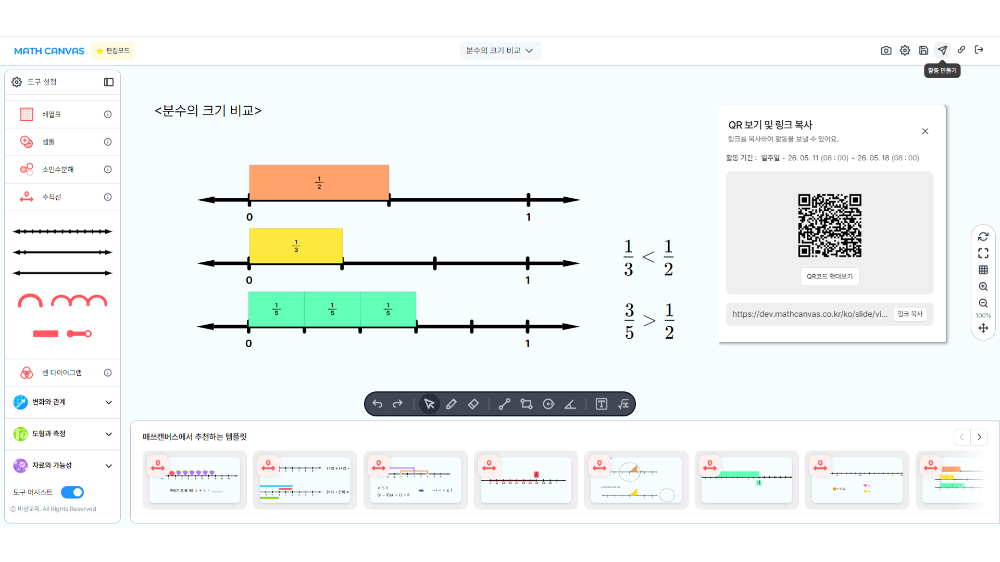

CBS 저작툴 현황과 저작툴 통합 고도화 필요성 보고
AIDT 1·2차년도 출원 과정에서 검증된 객관적 수치(외주 발주 22.4억원 / 디버깅 이슈 216건)를 기반으로 현행 워크플로우의 구조적 한계를 진단하고, 정·동적 저작툴의 통합 고도화를 통한 5년 누적 30.6억원 비용 절감 및 외부 SaaS BM 확장 가능성을 제시합니다.
CBS 4대 저작툴 현황 및 특장점
01CBS는 콘텐츠 성격에 따라 특화된 4종의 저작툴을 운영 중이며, 각 툴은 비상교육 산하 AIDT·비바샘·온리원·스마트문제은행·신규 게임브랜드 등 모든 주요 서비스의 콘텐츠 공급을 책임지고 있습니다.

모션에디터 — 코딩 없이 인터렉티브 콘텐츠 제작 및 양산
- 트리거-액션 기반 제작 방식 (예: 스피커 아이콘 클릭 → 음원 재생)
- 기제작된 조작형 템플릿을 import해 템플릿 내 디자인·오디오 등 컴포넌트를 라이브러리화 — 콘텐츠 재활용도 극대화
- 기존 템플릿에 간편한 UI의 데이터 바인딩(원천데이터 교체) 기술을 접목해 1개 템플릿으로 복수 콘텐츠를 손쉽게 양산할 수 있는 구조
- 조작형 콘텐츠 외주발주 최소화 및 기존 콘텐츠 재활용 극대화를 동시 지원 예정

범용 저작툴 — 표준화된 메타정보 기반 신뢰도 높은 문항 콘텐츠 양산
- 모든 콘텐츠가 교육부 교육과정 표준체계 메타정보로 태깅 — 교육 콘텐츠로서의 신뢰성 확보
- 방대한 교과별 문항 템플릿을 토대로 비상교육 범용 문항 저작툴로의 확대 발전 용이
- 비바샘 스마트문제은행·AIDT 등 서비스 운영을 통해 플랫폼 안정성 입증
- 힌트·해설 자동생성, 쌍둥이·유사문항 생성, 메타정보 오토태깅, OCR 등 AI 기능 탑재로 저작 효율성 우수

매쓰캔버스 — 수학 사고 과정을 기록하는 조작형 수업 저작 플랫폼
- 수와 연산·변화와 관계·도형과 측정·자료와 가능성 등 수학 전 영역을 포괄하는 46종 디지털 수학 도구 제공
- 2D·3D 도구를 한 화면에서 조합해 개념 설명·문제 구성·학생 조작 활동까지 하나의 캔버스에서 설계
- URL·QR 기반 즉시 배포로 수업 중 활동, 과제, 평가, 복습 자료로 바로 전환
- 학생 조작 과정을 텍스트 로그로 저장·영상처럼 재생 — 결과물이 아닌 사고 과정 기반 피드백 가능
- 차시 슬라이드로 캔버스 활동을 차시 흐름에 삽입, 수업 준비–실행–기록–피드백을 연결하는 수학 특화 수업 설계 도구로 확장

ibook 편집기 — 서책 UI를 그대로 디지털라이징
- 서책 UI에 다양한 조작형 활동을 추가로 탑재 가능
- 동영상 강의 삽입·학생 필기 저장·연관 문항 제공 등 기능 지속 확대
- AI 튜터 기능 제공
4종 저작툴이 묶여 만드는 CBS의 구조적 경쟁력
CBS의 진짜 가치는 4종 저작툴 각각의 기능보다도, 이들이 동일한 메타정보 표준 체계와 CBS 내 다양한 콘텐츠를 기반으로 통합 운영된다는 점입니다. 1개의 단일 콘텐츠가 4개의 저작툴에서 다양한 형태로 재활용되는 이 사이클은 경쟁사가 단기간 내 따라잡기 어려운 진입장벽입니다.
기반한 문항 양산
문항 데이터를 제안
연관 문항을 추가로 제공
실시간 조작·반복 학습
CBS 저작툴 통합 고도화 필요성
02AIDT 1·2차년도 출원을 준비하며 다양한 콘텐츠의 외주 의존도 누적, 비용 및 운영 측면의 부담 이슈가 발생했고, CBS 내 신규 브랜드가 확장될수록 표준화된 저작 환경에 대한 필요성이 더욱 대두되었습니다.
근거 1외주 수작업 콘텐츠 누적 — 840건 / 22.4억원
AIDT 1·2차년도 콘텐츠는 스윙크·레이팝·셈웨어·모노브레인·셀바스·클비·코드넛 등 7개 외주사에 분산 발주되었으며, 대부분 일회성 수작업으로 제작되어 재활용·확장이 구조적으로 어려운 상태입니다. 동일 기간 영어 교과는 템플릿 기반으로 3,333건의 아티클을 양산하며 외주 76건 대비 43.8배의 자산 효율을 입증했습니다.
| 구분 | 개수 | 특성 |
|---|---|---|
| 외주 수작업 (수학) | 764 | 일회성·외주사 종속 |
| 외주 수작업 (영어) | 76 | 일회성·외주사 종속 |
| 템플릿 기반 (영어) | 3,333 | 데이터 바인딩으로 양산 |
| 합계 | 4,173 | — |
※ 외주 발주 22항목·22.4억원의 상세 내역은 하단 Appendix A에서 확인할 수 있습니다.
근거 2운영 단계 디버깅 이슈 누적 — 216건
외주 개발물의 플랫폼 탑재·운영 과정에서 다음과 같은 디버깅 이슈가 누적되었습니다. 대부분 외주사-CBS 간 핸드오버 단계의 정보 단절에서 비롯된 것으로, 자체 저작툴 환경에서는 구조적으로 발생하지 않거나 즉시 대응 가능한 항목입니다.
이슈의 78.3%(169건)가 콘텐츠·뷰어 영역, 즉 외주가 만든 결과물의 호환성·환경 종속성에서 발생했습니다. 이는 외주에 의존하는 한 디버깅 비용은 콘텐츠가 늘어날수록 비례 증가할 수밖에 없는 구조임을 보여줍니다.
※ 11개 세부 이슈 유형의 상세 분류표는 하단 Appendix B에서 확인할 수 있습니다.
근거 3정적 저작툴의 높은 진입장벽 — 신규 브랜드 확장의 병목
정적 저작툴은 메타 표준 기반 신뢰성과 방대한 AI 기능(힌트·해설 자동생성, 쌍둥이/유사문항, 메타 오토태깅, OCR)을 갖춘 비상교육 내 가장 강력한 자산입니다. 그러나 그만큼 기능이 전문화·고도화되어 있어 새로 인입되는 사용자는 학습에 수개월이 소요됩니다.
- 높은 초기 진입장벽 — 범용 저작툴 특성상 전문·방대한 기능 탑재. 신규 인입 유저 학습에 수개월 소요.
- 신규 브랜드 확장 가속화 — AIDT·비바샘 스마트문제은행·신규 게임브랜드 등 인입 채널이 늘수록 학습 비용 증가가 병목으로 작용.
- 외부 BM 전환 불가 구조 — 사내 자산은 충분하지만 사용자 편의가 부족해 외부 유료 SaaS 전환이 불가능한 상태.
통합 전략저작툴 통합 고도화 5대 방향
위 3가지 근거는 서로 다른 문제처럼 보이지만, 해결 방향은 하나로 수렴합니다 — 사용자가 직접 자산을 만들 수 있는 통합 환경입니다.
저작툴 모드 2원화
내부용(Pro) / 외부용(Lite)으로 모드 분리, 사용자 권한·복잡도에 맞춘 UX 제공.
완성형 초벌 콘텐츠
방대한 CBS 데이터를 벡터화한 V사이트와 연계하여, 플랫폼 인입 계정 정보에 맞춰 학교급·교과별 완성형 초벌 콘텐츠를 자동 제공. 빈 캔버스 부담 제거.
데이터 바인딩
기존 제작 템플릿에 CBS API를 연동, 다양한 교과급에서 활용 가능하도록 원천 데이터를 교체하여 단시간에 고퀄리티 콘텐츠 양산.
AI 편집 어시스턴트
선택 템플릿 유형별 최적 커스터마이징 옵션 제안 + 유사·쌍둥이 문항 생성, OCR, 힌트·해설 자동생성 엔진 탑재.
BM 확장 — 외부 유료 SaaS
내부용 인프라를 외부 학원·교사·출판사 대상 유료 플랫폼으로 확장, 신규 수익원 창출.
워크플로우 비교 — 현행 vs 고도화 이후
03외주 의존 워크플로우는 7단계의 직렬 프로세스로 구성되며, 각 단계마다 핸드오버 비용과 정보 손실이 누적됩니다. 고도화 이후에는 기획자가 곧 제작자가 되는 4단계 병렬 구조로 단순화됩니다.
현행 워크플로우 — 외주 의존 7단계 직렬
고도화 후 워크플로우 — 저작툴 기반 4단계 병렬
고도화 이후 운영비용 절감 시나리오 (conservative)
04AIDT 1·2차년도 외주 발주 누적 22.4억원을 연 11.2억원 베이스라인으로 환산하고, 고도화 이후 외주 의존 70% 내재화를 가정한 보수적 모델입니다. 인플레이션·신규 브랜드 확장으로 인한 추가 발주 증가분은 미반영되어 있어, 실제 절감 효과는 본 예측보다 클 가능성이 높습니다.
연간 콘텐츠 제작 비용 — 현행 유지 vs 고도화 (단위: 억원)
시나리오: 70% 내재화 · 1년차 투자비 4억 반영누적 비용 추이 — 손익분기점 시점 (단위: 억원)
고도화 시 1년차 말 회수 시작, 2년차부터 본격 절감※ 본 모델의 베이스라인 항목별 가정(외주 발주비·1년차 투자·운영비 등)은 하단 Appendix C에서 확인할 수 있습니다.
외부 SaaS BM 확장 시, 잠재적 매출 시나리오
05통합 고도화의 종착점은 단순한 비용 절감이 아닌 내부용 인프라의 외부 유료 플랫폼화입니다. 메타 표준·콘텐츠 자산을 이미 보유한 CBS는, UI/UX 외부화만으로 신규 시장 진입이 가능합니다.
BM Upside외부 SaaS 전환 시 잠재 매출 (보수적 추정)
| 연차 | 유료 라이선스 (계정) | ARPU (연) | 예상 매출 |
|---|---|---|---|
| 3년차 (2028) | 50 | 200만원 | 1.0 억 |
| 4년차 (2029) | 150 | 200만원 | 3.0 억 |
| 5년차 (2030) | 300 | 200만원 | 6.0 억 |
| 3개년 누적 | — | — | 10.0 억 |
비용 절감 누적 30.6억 + BM 잠재 매출 누적 10.0억 = 5년 합산 약 40.6억원의 재무 가치 창출. 실제로는 인플레이션·신규 브랜드 확장 미반영 베이스라인이므로 상한은 더 높습니다.
종합 요약 및 의사결정 요청
06CBS는 4종의 저작툴(동적·정적·매쓰캔버스·ibook)로 비상교육 全 브랜드의 콘텐츠 제작을 지원하는 코어 인프라입니다. AIDT 출원 과정에서 외주 의존이 누적되며 비용·품질·재활용성의 임계점에 도달했고, 현 시점이 저작툴 고도화를 통해 비용을 내재화하고, 동시에 외부 유료 플랫폼 BM으로 확장할 적기입니다.
Decision지금 고도화해야 하는 3가지 이유
비용 임계점 도달
AIDT 1·2차년도만으로 외주 22.4억 + 디버깅 216건. 신규 브랜드 확장 시 누적 곡선이 가팔라지는 구조.
자산 재활용 격차
영어 템플릿 76 vs 3,333건의 격차가 보여주듯, 동적 저작툴은 자산화의 분기점. 늦을수록 외주 종속 자산이 누적됨.
BM 전환 타이밍
경쟁사 대비 메타 표준·콘텐츠 자산은 우위. 지금 UX를 외부화 가능 수준으로 끌어올려야 SaaS 시장에 선점 가능.
① 동·정적 저작툴 통합 고도화 프로젝트 1년차 투자(약 4억) 승인 / ② 외부 SaaS BM 검토 TF 구성 / ③ 2026년 연간 KPI에 콘텐츠 자체 양산률·외주 의존 감소율 지표 반영.
Appendix — 상세 근거 자료
A본문에서 인용한 수치의 원천 자료입니다. 필요 시 펼쳐서 확인하실 수 있습니다.
Appendix A영어·수학 교과 외주 발주 비용 상세 (22항목 / 22.4억원)
AIDT 1·2차년도 외주 발주 22항목의 원본 표입니다. 학년·품목·금액·계약업체별로 구분되어 있으며, 합계는 부가세 포함 기준입니다.


Appendix B조작형 콘텐츠 디버깅 이슈 상세 분류표 (216건)
경량화·콘텐츠·뷰어·인프라·저작툴 5개 분류, 11개 세부 유형으로 구분된 누적 이슈 216건의 원본 표입니다.

Appendix C본 모델의 베이스라인 가정 (5년 절감 시나리오)
4장 절감 시나리오의 항목별 가정값입니다. 외주 발주비·1년차 투자·운영비 등 베이스라인 구성 항목과 안정 구간 합계를 정리했습니다.
| 구분 | 현행 유지 시 (연) | 고도화 후 (연) | 비고 |
|---|---|---|---|
| 외주 발주비 | 11.2 억 | 3.36 억 | 특수 인터랙션·라이선스 30%만 외주 유지 |
| 1년차 고도화 투자 | — | +4.0 억 | 저작툴 개발·UI/UX 고도화 (1회성) |
| 1년차 외주 잔여분 | — | +2.24 억 | 전환기 외주 50% 유지 |
| 운영비 | ≈ 0 | 0.4~0.5 억 | 자체 운영 인건비·인프라 추가분 |
| 연간 합계 (안정 시) | 11.2 억 | 3.86 억 | 2년차 이후 안정 구간 |
※ CS·디버깅 절감 효과(216건 기준 추정 5~7억)와 신규 브랜드 확장에 따른 베이스라인 증가분은 보수적 관점에서 미반영. BM 확장 매출은 5장에서 별도 추정.